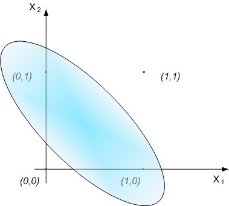

Let's imagine neurons that have attributes as follow:
- they are set in one layer
- each of them has its own polarity (by the polarity we
mean b1 weight which leads from single value
signal)
- each of them has its own weights Wij that
lead from xj inputs
This structure of neurons with their attributes form a
single-layer neural network. Above parameters are set in
the learning process of a network (output yi
signals are adjusting themselves to expected ui set
signals) (Fig.1). This type of network has limited
abilities. For example, there is a problem with XOR
function implementation. (Assume that activation function
is step function signal).
Fig. 1. Single-layer network
The possibility of learning process of neural network is
defined by linear separity of teaching data (one line
separates set of data that represents u=1, and that
represents u=0). These conditions are fulfilled by
functions such as OR or AND.
For example, AND function has a following set of teaching
vectors (Tab. 1.)
x1
|
x2 |
u |
| 0 |
0 |
0 |
| 0 |
1 |
0 |
| 1 |
0 |
0 |
| 1 |
1 |
1 |
Tab. 1. Set of teaching vectors of AND
function
The
neural network that implements such a function is made of
one output neuron with two inputs x1, x2 and
b1 polarity (Fig. 2).
Fig. 2. Neural network that can implement AND function
Assume
that during teaching process y1 = f ( W11x1
+ W12x2 + b1 ) = u1
which is ilustrated on Fig. 3.
Fig. 3. Linear separity in case of AND function
As
it's seen in Tab. 1, we should receive '1' as output
signal only in (1,1) point. The equation of line that
implements linear separity is u1 = W11x1
+ W12x2 + b1. So we can
match this line to obtain linear separity by finding
suitable coefficients of the line (W11, W12
i b1). As we can see of Fig. 3., it's no
problem for AND function.
Linear separity can be no longer used with XOR function (teaching
vectors of this function are shown in Tab. 2.).
x1
|
x2 |
u |
| 0 |
0 |
0 |
| 0 |
1 |
1 |
| 1 |
0 |
1 |
| 1 |
1 |
0 |
Tab. 2. Set of teaching vectors of XOR
function
It
means that it's not possible to find a line which
separates data space to space with output signal - 0, and
space with output signal - 1 (Fig. 4). Inside the oval
area signal on output is '1'. Outside of this area,
output signal equals '0'. It's not possible to make it by
one line.

Fig. 4. Data space of XOR function
The coefficients of this line and the weights W11,
W12 and b1make no affect to
impossibility of using linear separity. So we can't
implement XOR function by one perceptron.
The
solve of this problem is an extension of the network in
the way that one added neuron in the layer creates new
network. Neurons in this network have weights that
implement division of space as below:
1) for 1st neuron
u1 = W11x1 + W12x
2 + b1 > 0
u1 = W21x1 + W22x
2 + b1 < 0
2) for 2nd neuron
u2 = W21x1 + W22x
2 + b2 > 0
u2 = W21x1 + W22x
2 + b2 < 0
The
division should be like in Figure No 5.
Fig. 5. The way of implementation of XOR function by
multilayer neural network
After
adding the next layer with neuron, it's possible to make
logical sum. On the Fig. 5 we can see it as a common area
of sets u1>0 and u2>0.
Fig. 6 shows full multilayer neural network structure
that can implement XOR function. Each additional neuron
makes possible to create linear division on ui>0
and ui<0 border that depends on neuron
weights. Output layer is the layer that is combination of
smaller areas in which was divided input area (by
additional neuron).
Fig. 6. Structure of a network that has ability to
implement XOR function
|